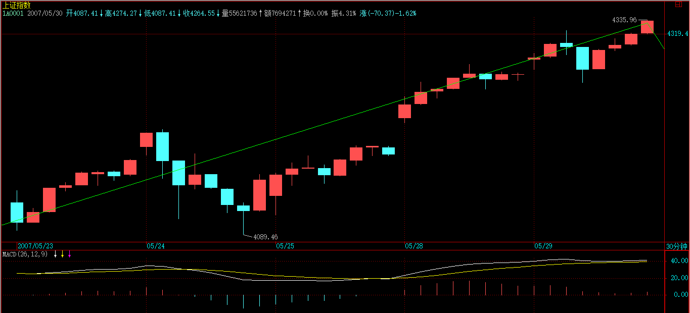
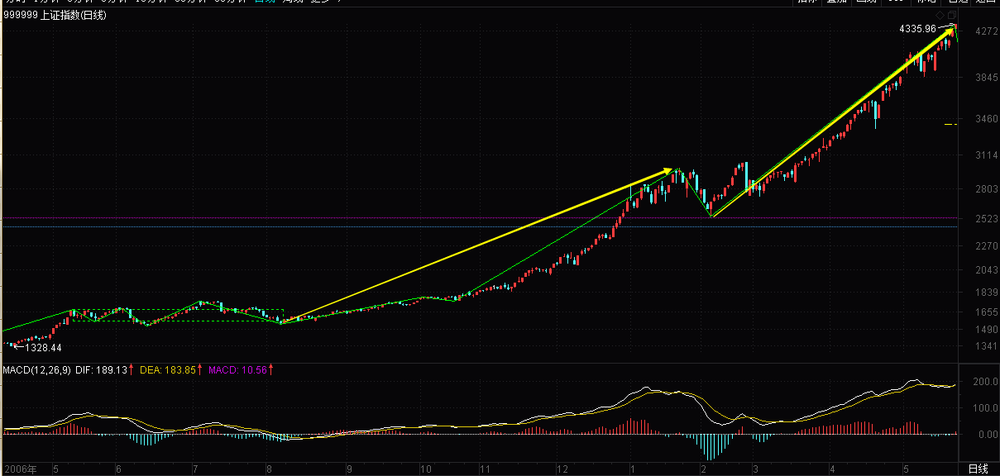

(2007-05-28 08:12:41)
【韶山映山红】西子凌波（阿娇）注：-------股票其运转的模式归根结底就是不同级别的中枢震荡与移动的组合最终构成相应的前戏-高潮模式】
人的行为同构性，把性研究清楚，人的行为也就略知一二了。股票买卖，不过是人的行为之一，当然也不例外。这里极为严肃地讨论这个问题。【韶山映山红】人的其他行为，和性的行为，同构。】
首先，先给股票定性别，为什么本ID总爱说股票是面首，因为他确实是面首，他是他，而不是她，【韶山映山红】股票的特性，和男性同构。】股票的性别是男的，所以难。难什么？难在高潮之不可持续，高潮之后必有不应。【韶山映山红】大资金利用高潮出货，出货之后必有转折，所谓不应。】
而投资者应该是什么性别，投资者应该是她而不是他，投资者的投资能力就应该如女性性能力般可持续，无不应。【韶山映山红】言下之意，要学会换股。而不是傻等死耗。】
以女“性”可持续之洪大去折服男“性”不可持续之弱小，这就是投资之道。【韶山映山红】缠师的性别或源于此。投资之道不在于一城一池之得失，而在于长久的可持续。个股的天长地久有时尽，投资却要绵绵无绝期。】缠师这句说的就是东方不败啊。】
【韶山映山红】股票是男的还是女的？缠师说是男的。其实应该是女的。女人的行为，想怎么样就怎么样，真的不需要理由。只能去揣摩，去顺应。能动的时候就动。不能动的时候就等。不能动，包括她不能动，也包括我不能动。】
投资的关键就是女性，就是可持续，这与股票本身的男性，不可持续构成了投资中最大的矛盾。【韶山映山红】投资的关键就是可持续，而股票本身的可操作性是不可持续的，这个可持续和不可持续，构成了投资中最大的矛盾。】
投资之道，就是驾御面首之道，就是御男之术，就是采阳补阴之方。采阳，要讲究其火候，火候太嫩，采之难以成丹，太老，同样是废物，如果是阳气外泄，化为污浊之精，则更是大煞风景。股票也一样，太早买入，一阳未生，则纯粹折腾，毫无趣味；待到高潮之刻不能及时采补，则阳气尽去，污精尽泄，烂蛇死鳝，反受其困。【韶山映山红】买早了，原走势没背驰，或者背驰又被小级别延伸破坏，所谓一阳未生。卖迟了，中阴阶段已过，阳气尽去，就可能因走势转折而被困。】
【韶山映山红】桃花的博客注：（买早和卖晚都是不可取的，投机投的就是时机）】
由于男“性”之不持续，则女“性”采补之关键，就是要取其精华，何谓其精华？一阳复始采之，阳极阴生弃之。用更通俗的话说，就是买之前戏，卖之高潮。【韶山映山红】取其精华就是买点买、卖点卖。买之于前戏，一阳复始之时，也就是下跌走势的背驰、中阴阶段。卖之于高潮，阳极阴生之时，也就是上涨走势的背驰、中阴阶段。前戏，高潮，都是中阴。】
【韶山映山红】若禅精舍（陈秋明）：
这里涉及的内容，更多是为一只股票的长期运作所论述，对于资金量不大的操作来说，不断的调整持仓凭证，只参与相对强势的上涨段效率才能高。但对资金量比较大，无法一次性判断介入或退出的情况，一个面向长期运作的计划就必然要有，这样的收益率当然会比资金量小的时候要少，但既然那种模式已经不可持续，那就是只能选择可持续模式中性价比高的。
每每看到有人说每年五倍收益，几年后地球都是你的之类的观点，其实都是没有大资金运作经验造成的单调思维。小资金搞好了，一年五倍、十倍都有可能，但这样的增长是无法持续的，资金量增长到一定规模，随着操作模式的改变，收益率必然下降。此外对于小资金来说，一个日线级别的下跌，其中的30分钟中枢震荡都可以参与，这对于大资金完全不可能，最多是动用资金池里面的小部分资金，因为必须要保证介入和退出的顺利。一个一分钟级别买点都可以全仓参与的资金，是不懂连日线买点都无法全仓那种无奈的。
其实在资金量大了之后，随着量级的增长，对技术面的要求会逐渐降低，除非是缠师那样非要尽快把成本降为零那种，缠师这种纯属个人爱好，就好像朱棣当皇帝了还屡次亲自上马冲锋砍人一样，历史上也就这一位大爷有这爱好。更多的情况，对资金量比较大的运作，如果想省事，股票市场便宜的时候找些凭证囤货就好了，在这其中风险才是重中之重，所以配比很重要，但这种买入和卖出的依据中，技术面的因素就比较少了。像15年那种情况，小资金可以去追那最后的上涨，资金量大一些的4月底就应该全部或至少大部分退出，最后那段干脆就扔掉了。】
买和卖，是不对等的，相应的策略也是不一样的，为什么？因为买卖的前后状态是不同构的。【韶山映山红】买的前后状态，卖的前后状态，不同构。分别是什么样的？有哪些不同？★可以做个专题，以后研究。】
【韶山映山红】这里说的不对等、不同构，是指某一段走势自身的初始与终结之间的对比。换句话说，底分型和顶分型不对等、不同构，底部结构和顶部结构不对等、不同构，而笔、线段的划分规则没有这种不对等、不同构的特性。★可以做个专题，以后研究。】
在市场里，买是钱换筹码，卖是筹码换钱，钱是与时间无关的，1元，今天是，明天还是，只要还是钱，就是不变的。【韶山映山红】钱不是时间函数，与时间无关。】而筹码不是，今天的筹码价值与明天的就不同，而筹码的数量不变是没意义的，因为最终算的还是钱。【韶山映山红】筹码也不是时间函数，但函数有时间因素。】而由于时间的不可逆转，因此（钱-筹码）与（筹码-钱）这两个结构，就不是同构的。【韶山映山红】买入低价的筹码，卖出高价的筹码，这两个结构，从原理上说，不同构。股票的涨跌也不同构，不断有新资金买入才会涨，跌却像自由落体有内在的重力起作用。】
这道理十分简单，谁都明白，但却是操作逻辑的基础，最基础的往往最简单。【韶山映山红】底层逻辑最简单，却是基础。】
因此，对于一个大级别的买的过程，或者说一个大的建仓过程，买必然是反复的，买中有卖，不断灵活地根据当下的走势去调整建仓的成本与数量，底部区域可以进行最复杂的中枢延伸与扩展，唯一的目的只有一个，取得足够的、成本不断降低的筹码。【韶山映山红】建仓的衡量指标不只是数量，还有成本。】这不一定和坐庄有关，当然也可以相关。【韶山映山红】底部总会有筑底的过程。一买只有一个，二买却可以有一串。二卖也有一串吗？对应一串二买的结构都算是二卖吗？★可以做个专题，以后研究。】
一个大级别的买的过程，某种程度上还兼备着改造这股票股性的任务，而且这也是一条底线，也就是能顺利退出的底线，【韶山映山红】改造股性是能顺利退出的底线？★可以做个专题。以后研究。】在这个底部区域的股性改造中，也就是一个前戏的过程，没有好的前戏，不会有好的高潮。【韶山映山红】如何改造股性？股性是如何被改造的？有哪些方面的表现？大学课程。可以做个专题。以后研究。★★★】
注意，底部不一定就是在一个平衡的水平线上中枢震荡，还可以是比较复杂的通道式上升，当然，一般来说，这种通道都是斜率很小的，充满激烈的震荡，具体的以后再说。【韶山映山红】底部形态及其特征。★可以做个专题。以后研究。★“平衡的水平线上中枢震荡”。“比较复杂的通道式上升”。“斜率很小”。“充满激烈的震荡”。★】
【韶山映山红】桃花的博客配图。】
【韶山映山红】若禅精舍（陈秋明）配图：
】
一个好的、具有诱人前戏的买，当脱离底部区域时，其成本应该早在该区域之下。【韶山映山红】底部结构的构建过程，把成本降到中枢之下，才能确保底部构建失败的三卖退出不亏钱。】
而在大级别中枢上移中，只会减少成本，只有最愚蠢的拉抬，才会增加其成本。【韶山映山红】大级别中枢上移中，小级别打短差减少成本。小资金做跟随着，中枢上移不打短差。】
其后的活动，本质上只是股“性”不断激发，如同蜂王散发那诱惑引发那群雄蜂的追逐，这更如同一个壮观的NP过程，N不断增大，各种裂口、长阳，将这NP活动推向高潮。【韶山映山红】大级别中枢上移，吸引新资金的加入，就是N不断增大的NP活动。】
对于刚脱离底部的股票，第一次的高潮就如同一个淫乱狂欢夜的序幕，只不过是为第二、第三、第四、第五、第六、甚至第10次高潮进行铺垫。【韶山映山红】第一次离开。】第一次高潮后的不应期往往不长，但可能很猛烈，震荡很激烈，不应期中还有继续高潮的冲力。【韶山映山红】三买的回踩，可能很猛烈，震荡很激烈，还有继续上涨的冲力。】这种股票，就如同刚被开发的面首，只有第二、三次，甚至第四、五次的高潮才会渐入佳境。【韶山映山红】】
而一个出色的卖，就是在那大级别高潮的后继乏力、背驰中退出，一个好的庄家或大资金操作者，最好的状态就是在那大级别的最后疯狂中被疯狂的雄蜂把货给抢光了，那种所谓筑平台出货的傻瓜，死去吧。【韶山映山红】底部总会有筑底的过程，顶部却不一定有类似的筑顶，完全可以在赶顶的过程中完成撤退。这也意味着顶部小转大将越来越多。★可以做个专题。以后研究。】
注意，本ID在上面是否正在进行一个AV的解说，这并不重要，重要的是，股票就是这样每天现场直播着这NP级别的AV。
对于一般的散户投资者，在一些较大级别的介入中，例如日线以上的介入中，并不一定都要在第一类买点介入，因为，其后的前戏过程，并不一定是一般的散户可以忍受的，一般地，可以在第二类买点出现后才考虑介入，或者更干脆的，是第三类买点出现再介入。【韶山映山红】需要预先研判有一个大级别的行情。★以后研究。】
但如果资金有一定规模，需要一定数量的筹码，或者要为以后的猎鲸活动储备经验，一个至少从第二类买点开始利用部分前戏的介入是必须的，其中也要如大资金一样，有利用前戏的震荡降低成本、增加筹码的必要。【韶山映山红】“第二类买点开始”还属于“前戏”的一部分。第三类买点开始才是前戏结束的标志。】
这有什么好处？最重要的一个好处，就是熟悉其股性，一个前戏都不参与的，怎么可能在后面的N次高潮与不应中得心应手？【韶山映山红】股性都包括什么？底部的股性如何在后期体现？★可以做个专题。以后研究。★★★】
【韶山映山红】若禅精舍（陈秋明）：
每只个股的股性是不同的，这通常只有长期去参与一只股票才会有这种经验，长期参与的个股数量多了，自然就了解不同股性的特点。但对资金量不大的情况并没有很必要去熟悉这些东西，且到需要了再说。一个股票盯盘盯时间长了，大脑可以自动去归纳整理，虽然很多时候说不出理由，但就是知道这是假的冲高，这是假的下跌，这会要跌了，那会要涨了，这只有关于这个股的信息量达到一定丰富程度后了才会有。】
性，说白了就那么一回事，所有人的基本运转模式都是一样的，也就是前戏-高潮的模式。股票也一样，其运转的模式，归根结底，就是不同级别的中枢震荡与移动的组合最终构成相应的前戏-高潮模式，都一样，【韶山映山红】不同级别的中枢震荡与移动的组合。】但在一样之中，每个股票都有其股性，涉及频率、幅度、形态复杂度等等，这些，对于每只股票都是独特的，这也就是为什么，依据同一模式展开的走势，却呈现千差万别的最终图形。【韶山映山红】股性，涉及频率、幅度、形态复杂度等等。可以做个专题。以后研究。★★★】
附录：
【韶山映山红】2007-5-28 15:37】
周末没什么消息，憋了两天的能量在今天爆发，所以就搞出一个大缺口来，【韶山映山红】2007-5-28是星期一。“憋了两天的能量”是指什么？以后研究。】
【韶山映山红】5月前三周的盘整，第4周犹疑的拉升，憋了什么能量呢？】
但其后的走势，并不是太强，依然只是一个平衡市，【韶山映山红】5月28日跳空高开高走，但是当天的30分钟K线只形成了一个中枢，“只是一个平衡市”，而没有向上趋势或者向上单边走势，所以“并不是太强”。】
所以这缺口的吸引力以及该平衡市所构造的新的中枢的引力，使得后面三天的技术压力不可忽视。【韶山映山红】什么样的技术压力？★这里说的压力都不是来自上方的某个压力位。“缺口的吸引力”是向下的，所以算是“技术压力”。“平衡市所构造的新的中枢”对上下的离开都有回拉的引力，所以也算是“技术压力”。】
【韶山映山红】西子凌波（阿娇）博客配图。】
周四是月线收盘的位置，【韶山映山红】周四是指2007年5月31日。本日是2007年5月28日，周一。】
刚好也是缺口在技术上需要三天考验的时间，【韶山映山红】缺口是否回补？一般技术理论都公认需要三天考验的时间。】
所以后面三天，多空的搏杀将极为惨烈。【韶山映山红】前面从419开始的5分钟趋势，最后一个5分钟中枢的震荡，从528开始算是确认离开段了，而且是跳空脱离中枢震荡区间，形成了1分钟趋势的离开，继续走强就5分钟趋势延伸，否则就会宣告趋势的终结。三天后月线收盘，会收出一个什么样的Ｋ线形态？528这天的向上跳空缺口是否会被回补？这个缺口是定性为中继缺口还是顶部衰竭缺口？诸多因素纠缠在一起，“多空的搏杀将极为惨烈”。】
大的方面看，4129点的1/2线在六月份将上移到4144点，【韶山映山红】4129点是5月的1/2压力线。4144点是6月的1/2压力线。】该线的突破在日线上的回试确认并不能完全保证周线、月线上的回试确认，从最严格的意义上，在月线上至少需要3个月才能确认该线的真正有效突破。【韶山映山红】一般技术理论都公认，突破需要三天考验的时间。】
这就像1-3月份在1/4线时所呈现的走势一样。【韶山映山红】1/4压力线在1月突破之后，2月围绕震荡，3月才再次大幅度离开。】
当然，最理想，最强的走势就是，5月收光头阳线，六月以下影线的方式是确认该线的突破，七月继续长阳最终确认该突破的完全有效，【韶山映山红】5月光头阳线突破压力线，6月以下影线的方式回踩，然后再离开，1月继续长阳完全脱离压力线，最终确认该突破的完全有效，强势三部曲。】
但这只是最理想的情况，市场最终并不一定能走出来。【韶山映山红】5月果然没有收出光头阳线，6月确实以下影线的方式确认该线的突破，7月也继续长阳最终确认该突破的完全有效。不是最理想的情况，但最终还是依照缠师的剧本演进了。】
政策方面，关于操纵的条例周末已经在报纸上有所暴光，说实话，这条例才是一个真正的狠招，其中有些规定，对市场的格局有严重的影响，在本ID看来，这才是这两年来市场上飘来的真正的第一朵黑云，只是现在市场中散户太多，一般反应比较迟钝，所以没什么感觉。【韶山映山红】证监会将《内幕交易行为认定指引》和《证券市场操纵行为认定指引》两份草案文件转呈至最高人民法院，待高院出具相应的司法解释后正式实施。其中，在《内幕交易指引》草案中，对于通过内幕交易成功规避的损失也被纳入到违法所得的范畴中。此外，对于涉及金额较大、社会影响恶劣、以暴力胁迫手段强迫他人进行内幕交易或操纵证券市场和与上市公司等关联人合谋进行内幕交易或操纵证券市场的情形将被要求从重处罚。 《操纵市场指引》草案将其分为三大类，分别是连续交易操纵、预定交易操纵和洗售操纵。针对连续操纵交易，这次《操纵市场指引》草案中明确规定，在一个交易日交易某一证券两次以上，或在两个交易日交易某一证券三次以上，即构成连续买卖。更为最重要的是，按照新的认定指引，没有成交的买卖申报也可以算作连续买卖；再比如约定交易，只要双方买入申报和卖出申报的价格相近，就可以构成该项操纵的条件。在连续操纵和约定操纵外，《操纵市场指引》草案将“通过在自己实际控制的账户之间进行证券交易来影响交易价格和交易量”的行为认定为“洗售交易”。 】
由于该条例只是一个草案，所以还有纠正的可能，下面，真正有意义的事情，就是对该条例进行无情打击，深入揭发，让该条例中严重危害市场的条款不能实施。
如果大盘本月不能收出光头阳线，该条款以及今后几天的一些政策面动态是主要的原因。但大家的心态要平和点，毕竟政策也是市场合力的一部分，他们也不容易，就原谅他们吧。
在某一级以上的，今天应该已经收到一些东西，具体的本ID不能说，内容当然也是和调控股市有关的，估计这几天就会出来了。但这些警示性的东西有多大作用，就看市场反应了，这也刚好配合了技术面上的要求。【韶山映山红】技术面上，5分钟趋势已经走出3个中枢了，有调整形成大级别中枢的需求。】
本ID晚上要见些人，不能陪各位解答问题了，先下，再见。
今天解盘，收盘后附录上，先下，再见。
2007-5-28 08:14
周末没什么消息，憋了两天的能量在今天爆发，所以就搞出一个大缺口来，但其后的走势，并不是太强，依然只是一个平衡市，所以这缺口的吸引力以及该平衡市所构造的新的中枢的引力，使得后面三天的技术压力不可忽视。周四是月线收盘的位置，刚好也是缺口在技术上需要三天考验的时间，所以后面三天，多空的搏杀将极为惨烈。
大的方面看，4129点的1/2线在六月份将上移到4144点，该线的突破在日线上的回试确认并不能完全保证周线、月线上的回试确认，从最严格的意义上，在月线上至少需要3个月才能确认该线的真正有效突破。这就像1-3份在1/4线时所呈现的走势一样。当然，最理想，最强的走势就是，5月收光头阳线，六月以下影线的方式是确认该线的突破，七月继续长阳最终确认该突破的完全有效，但这只是最理想的情况，市场最终并不一定能走出来。
政策方面，关于操纵的条例周末已经在报纸上有所暴光，说实话，这条例才是一个真正的狠招，其中有些规定，对市场的格局有严重的影响，在本ID看来，这才是这两年来市场上飘来的真正的第一朵黑云，只是现在市场中散户太多，一般反应比较迟钝，所以没什么感觉。由于该条例只是一个草案，所以还有纠正的可能，下面，真正有意义的事情，就是对该条例进行无情打击，深入揭发，让该条例中严重危害市场的条款不能实施。
如果大盘本月不能收出光头阳线，该条款以及今后几天的一些政策面动态是主要的原因。但大家的心态要平和点，毕竟政策也是市场合力的一部分，他们也不容易，就原谅他们吧。
2007-5-28 15:37
[匿名] 新浪网友 2007-05-28 15:48:54
缠姐 一个困惑多日的问题，第三类买卖点后中枢的构成应该是从哪段开始计啊？？？构成第三类买卖点的那段开始？还是＋1段开始？
==
你必须先了解结合律，中枢（C）=（A）+（B）里，前面A一个必须依然满足该级别中枢的定义，B满足次级别的定义而且是完成的，然后再看回试那一段是否次级别完成，这样就能确认第三类买卖点。【韶山映山红】（C）=（A）+（B）是什么意思？★有一个中枢（C），通过结合律重新组合为（A）+（B）两部分，其中A“必须依然满足该级别中枢的定义”，就是说，A是一个原级别中枢，不管怎么结合，都不能影响原中枢的原级别基本形态，不能乱拆。“B满足次级别的定义而且是完成的”，可见B被当做了次级别离开段，是不是次级别走势类型并不是重点，重点是“满足次级别的定义”，B原来被包含在A中枢里，只是通过结合律构成了B。如果“回试那一段”是“次级别完成”，“就能确认第三类买卖点”，也就是说，另外还有一个次级别返回段，是独立的，不是从“中枢（C）”分解出来的，不算中枢的一部分。是不是次级别走势类型也不是重点，她的重点是“次级别完成”。】
2007-5-28 15:55
袖手旁观
（A）要满足本级中枢定义，就是说至少三段次级别走势的重合已经完成；
（B）是次级别离开的走势，当然还在三买前面，所以还是整个中枢（C）的一部分。
缠mm的意思应该是分解组合的时候要注意，（B）做为离开的次级别走势分解出来的时候，中枢（C）剩下的部分（A）要满足本级中枢的定义，然后如果（B）之后的次级别回试不破，即可确认三买。
这个回答重在说如何定位三买，似乎跟提问者的重点不同，因为提问是三买后的下一个本级中枢从哪段开始——这个提问本身倒也确实不用回答，按缠mm思路，一定认为中枢定义已经是确认中枢的全部依据。
2007-5-28 18:43
袖手没明白缠的意思，缠这个回答其实已经告诉了下一个本级中枢从哪段开始。中枢（C）=（A）+（B），中枢C由A和B组成，A满足中枢定义，也就是有三段次级别重叠，B是次级别离开且是完成的，那么下一个本级中枢自然是从之后的次级别返回开始，也就是从包含三买点的那个次别返回段开始
2010-6-18 20:52
这个可不是一定的，例如三买后不背驰，向上形成第三个中枢才背驰，然后再依据这个中枢扩展成跟C同级别的中枢，那么三买就不是这个新中枢的构成部分了。
缠师说离开和返回的次级别都是完成的才行，我现在还有些糊涂，因为走势类型分为盘整和趋势，一个盘整的结束可以是一个趋势的开始，对于这个趋势来说就还未完成。例如B是只有一个中枢的盘整，结束后向上形成另一个同级别中枢不回C里，按照定义这个中枢的结束点就是C的三买，但问题是现在的B却变成有两个中枢的趋势了，而且未完成，如果三买后的趋势背驰了而形成一个同级别的V型反趋势不回中枢C，那么到底哪个才是真正的三买？
2011-1-22 15:29
雪狼 2007-05-28 15:54:37
博主你好 辛苦了！
“当行情当下走到d4点时，根据上面的原则，无非有下面两种可能的分解：
g0d4=g0d1+（d1g1+g1d2+d2g2）+g2d3+d3g3+g3d4
=g0d1+d1g1+g1d2+（d2g2+g2d3+d3g3）+g3d4”
请问博主：当行情当下走到d4点时，该选择g3d4和那段比去判断盘整背驰没有？
我的理解是如果按g0d4= g0d1+（d1g1+g1d2+d2g2）+g2d3+d3g3+g3d4分解就用g3d4和g2d3比较对应的MACD；【韶山映山红】第三类买卖点出现之后，分析离开的三段内部的线段类盘整背驰判断，没有线段类盘整背驰才会有线段类趋势，否则就会形成新的中枢。】
如果按g0d4= g0d1+d1g1+g1d2+（d2g2+g2d3+d3g3）+g3d4分解就用g3d4和g1d2比较对应的MACD。【韶山映山红】第三类买卖点出现之前，分析离开段和进入段的中枢震荡盘整背驰，然后看是否有第三类买卖点的出现。】

我的理解对吗？
==
对的，这里，无论是哪个，最终的结论都是d4点是背驰点，因此该点的意义就大了。
有时候会出现两种情况不一致，也就是后一段的力度刚好是前两段的中间，这时候，可能的情况就是拉回满足那种分解的最低幅度，而不一定到达不满足那种分解的最低幅度。【韶山映山红】两种组合，一个是线段类盘整背驰，拉回前低；一个是中枢震荡盘整背驰，拉回中枢ZD。介于两者之间，就是看哪个更低就拉回哪个。】
具体的以后课程里会说到的。
2007-5-28 16:04
[匿名] 水浴清蟾 2007-05-28 16:04:02
我现在用000900学习妹妹的理论，进进出出好几次了。上周五看出背驰，在21.01出了，
【韶山映山红】000900现代投资。】
但今天冲好高，我看的五分钟的中枢，但这次判断失误，1000股被套，
现在已经30分背了。
不过，我基本空仓，手上只有000900，所以还有机会把成本降下来。
==
一般来说，如果卖了没回补，最好别养成追高回补的坏习惯。【韶山映山红】如果卖了没有在调整中回补，就选择接受踏空，而不是追高回补。打短差的目的是降低成本，不符合这个目的的行为都是错误的。踏空只是减少盈利，不会拉高成本。★以后研究。】
抛了，在技术允许的情况下，一定要买回来，否则节奏就会乱，一旦发现再冲高，再追，反而容易被套住。【韶山映山红】打短差都是成对操作，所以要努力回补，否则就没办法进行下一次的操作。如果节奏乱了，调整方法是放弃一次操作。★以后研究。】
2007-5-28 16:08
[匿名] 新浪网友 2007-05-28 16:06:39
按《操纵市场指引》,行政部门权力太大又没得到制约,麻烦大了!!!不受制约的权力对市场的危害最大.建议在指引中加入对调查权使用的约定以及对调查结果审核\上诉\复核等方面的制约调查权滥用的条文!!!
==
还有很多条款过于严格，根本没可操作性，本ID当然也会通过影响去休正这事，但这种事情，必须要有大家的努力，否则最后害的是所有的人。
2007-5-28 16:14
[匿名] 卖错了吗 2007-05-28 16:13:52
昨天在1358卖出777，因为判断为第三卖点，怎么后面的走势完全不是，真郁闷，LZ，我的判断错哪了？
==
无论000777与600777，你的判断都错了。请你先把定义搞清楚。连中枢都没脱离，哪里有第三类卖点？
【韶山映山红】000777中核科技。】
【韶山映山红】600777新潮实业。】
2007-5-28 16:25
[匿名] 大盘 2007-05-28 16:06:06
请问博主：
关于第3类买卖点的一个疑惑
次级别盘整（盘整背驰）离开+次级别盘整（盘整背驰）回抽不破前面本级别中枢高点ZG可以算作3买吗
因为有配图，具体请参考以下网页链接：
www-itai-org-cn/zsid/zs9-htm （- 改为 .）
----------
[匿名] 大盘 2007-05-28 16:15:20
如果博主觉得看网页麻烦：我的问题可以简化为，
1） 一个日线中枢3段结束后，跳空离开中枢最高点，然后逐渐扩展成第2个日线中枢，并且跳空后的第2个日线中枢每段都是只有一个30分钟的盘整走势，那么第一个日线中枢有3买点吗？
2） 3卖点允许次级别盘整离开+盘整返回这种组合吗？
==
只要是次级别的就可以，【韶山映山红】大盘在这里问了两个问题：１，第三类买卖点的次级别离开和返回是否可以有盘整+盘整的组合。２，次级别离开是否可以有次级别以下的更低级别，甚至跳空缺口的情况。 缠师说“只要是次级别的就可以”，也就是不否认盘整+盘整的组合。但是没有说清楚，次级别离开是否可以有次级别以下的更低级别，甚至跳空缺口的情况。实际上可以理解为只要是次级别的返回就可以，离开段都不是那么讲究。】
关键不是这里，而是结合律，必须要括弧里的都满足定义。【韶山映山红】因为不能都走出独立的走势类型，所以要用多义性分析去分解走势。实际上是做同级别分解，满足定义的分解就是可以接受的第三类买卖点。】
具体在上面回答相关问题里有。【韶山映山红】“上面回答相关问题”应该是这个：你必须先了解结合律，中枢（C）=（A）+（B）里，前面A一个必须依然满足该级别中枢的定义，B满足次级别的定义而且是完成的，然后再看回试那一段是否次级别完成，这样就能确认第三类买卖点。】
详细的以后课程里有。
2007-5-28 16:28
[匿名] 远帆 2007-05-28 16:20:26
每次根据一分钟或五分钟线在三卖的时候抛出做T＋0想把成本降下来，可是就是降不下来，就是降下来也不够手续费，结果成本越做越高，缠主说说这怎么办？【韶山映山红】降低成本不是在三卖的时候抛出，而是中枢震荡的高点抛出。一开始就错了，通道好也只是死得更快。】
==
那证明你的通道、技术等都不满足用5分钟以下级别操作，就把级别放大操作。
2007-5-28 16:29
[匿名] 白玉兰 2007-05-28 16:29:34
现在深刻理解小资金不要参与盘整的重大意义，我买了北京人后，机会成本都无法计算了。
【韶山映山红】北京人，指000802北京旅游，2014.10.24变更为北京文化。】

==
对的，一定要根据自己的实际情况来，【韶山映山红】实事求是。】资金量、通道、操作时间等是决定你操作风格和操作级别的，一定要自己选择好。【韶山映山红】不要参与盘整不是因为小资金，而是技术能力不足。不参与盘整又该怎么操作？线段类盘整背驰就退出。 操作风格不是源于个人爱好与兴趣等主观因素，而是源于客观因素。】
2007-5-28 16:31
在某一级以上的，今天应该已经收到一些东西，具体的本ID不能说，内容当然也是和调控股市有关的，估计这几天就会出来了。但这些警示性的东西有多大作用，就看市场反应了，这也刚好配合了技术面上的要求。
本ID晚上要见些人，不能陪各位了，先下，再见。
2007-5-28 16:36
(2018-01-17 16:21:42)
老兵今天也应各位粉丝的要求，说说具体的“术”！！关于好票的反复轮动技术
老兵只说这一次！
请收藏下面这幅图
如果有秘密
也只能在这张图里
老兵非常确认的告诉大家：
市场的不确定性和价格的波动性，决定了绝大多数的止损常常会是错误的，只有极少数的止损是对的，大家只需要简单的回看一下自己的投资历史，就可以清晰地发现：
（1）是那些错误的止损，导致了账户的“暴毙”；
（2）是那些错误的不断止损，导致了弹尽粮绝，惨淡离场；
但是，止损错了吗？
显然是没有的
实际上“止损”是把刀
关键看用的人！！
所谓，假传万言书，真传一句话，老兵今天告诉大家一句话的秘密：止损止的是方向损！大家注意了！！！（把这句话默读3遍！！！）
人工智能方向有变化吗？新能源方向有变化吗？养老方向有变化吗？方向没有变化，每一次的下跌，都是机会！
只有把理论厘清之后，老兵才能说“术”的事情，大家记住一个口诀：下跌赚股票、上涨赚钞票！！老兵的“术”，是网格交易策略的升级版，这个网格交易策略的思路，来源于上世纪40年代的某一天。这一天，信息论之父申农在黑板上给大家演示了他的投资理论：
任何一个价位买进资金的50%，也就是说《资金数量：股票市值》=50%：50%。股票价格上涨一定幅度就卖出一部分股票，保持剩余的《资金数量：剩余股票市值》=50%：50%；反之股票价格下跌一定幅度，就用剩余资金买进一部分股票，始终保持《剩余资金数量：剩余股票市值=50%：50%》。
这里的奥秘是：
始终保持《剩余资金数量：剩余股票市值=50%：50%》
老兵还是拿例子来说吧：
手里有10万现金，买一只10块一股的票，我们把资金分成2份，按照5：5平衡，就是：《5万现金：5000股》
随后，根据行情的发展，无非就是涨和跌，我们把涨和跌的情况，都列出来：如果股票涨到12.5元/股，就卖掉1000股。保持50：50的平衡（股票市值 = （5000-1000）股 * 12.5元 = 5万元）。此时我的收益是2500元。再举个反例，如果股票跌到8.33元/股，就买入500股，花了4167元。此时，我的资金数量是45833.25元。股票市值 = （5000+500）* 8.33 = 45834.25元。
【韶山映山红】这篇博客文章的作者对申农的公式有误解。如果股票涨到12.5元/股，股票市值62500，增值12500，要维持比例平衡，需要卖出6250元的股票，也就是500股。如此一来，持币56250元，持股4500×12.50=56250，还是50%：50%。】
信息论之父申农用这个办法来对付股票价格的随机走势，在他十多年的交易生涯中，资金获得了29%的年复利增长。老兵在这里暂且称上面使用的交易数学模型为“等比例仓位模型”（老兵的意思是，重点在于比例，而不是50%这个值，50%完全可以是其他的百分比数值）
有些人肯定是有疑问的：譬如，为什么申农最后没有成为巴菲特呢？是这套方法失灵了吗？呵呵，其实不是，原因是申农50岁后得了老年痴呆症，交易战绩没能延续~~（呵呵，看来泄露天机，都是要招罪的，今天你们要是不点赞，不转发给予老兵补偿，老兵以后也得保守点了）
申农的这套策略，是震荡市吸货的最牛逼武器，没有之一！！老兵给大家透露下，国家队吸货，也是要用这个套路的，原因只有一个：高效、简单、靠谱！
但是，单边趋势，这个策略就坑爹了，所以，老兵在这里呐喊3声：
用网格策略反复做T轮动，最大的魅力在于：震荡市吸货阶段！（老兵用图来表示，这个策略赚的就是，下面这个深V的股数，等建仓的股数赚的差不多的时候，等待趋势启动，就不要卖了，就要从网格策略转移到“持仓策略”了，今天看你们的表现了，点赞和转发量上去了，让老兵心里舒坦了，老兵可以考虑说另一半）
为了论证网格策略的有效性，老兵今天还给大家准备了大餐：我们以平安银行（000001.SZ）为例，用数学模型来验证一下网格的交易格值选取对网格交易收益的影响。
测试参数如表1所示。为了测试方便，这里我们的开仓策略设置为在首个交易日半仓入目标股票，手续费以谨慎性原则设置为0.8‰，测试数据为2016年7月1日至2017年3月1日，共168个交易日的1分钟线数据。此区间内该股票表现如表2所示。
针对上述策略进行区间回测。得到的格值-收益对照图如图3所示。

从上图我们可以发现，不同的格值选择对网格交易的收益有着不同的影响。特别是当格值从11‰变化到13‰时，格值变化2‰，收益从2557.6增长到4430.9，增长率达到了62.98%。格值的选择对网格策略的收益影响显著。
好了，该交代的，老兵都交代了，老兵最后，再反复啰嗦几句：
做T只能在震荡市，单边做T是肯定要T飞的，如果网格策略遇到“微笑曲线”，其实收益率是并没有变。（左图），假如该票进入网格区域后持续下跌，并在底部形成了震荡，那么就铁定会获取超额收益。（右图）
老兵简单说吧：只要遇到好票，长时间的震荡，基本就是在给老兵送免费的股票~~~ 从长期的角度看，越下跌，老兵是越高兴的！
【韶山映山红】这篇博客文章的后半部分不符合申农的公式。而且对网格交易法有曲解。】
【网文】风华绝代绝招：机构只持一只股，反复轮动“做T”（独家干货）
【韶山映山红】节选。这篇文章是编辑而成，前半部分经过查找，是上面那篇文章的部分内容，在此略去。】
机构的操盘方法与散户是不同的，甚至很多地方是完全相反的，最大的不同就是持仓策略和方法的不同。假设机构和散户同时建仓一只股票并持有一年，这只股票涨幅达到100%，那么，散户的盈利最多就是100%，但是，高水平的操盘手可以通过机动持仓和做T将盈利扩大到300%!再假设这只股票一年之中跌了50%，那么，散户如果被套一年后是浮亏50%，无论是止损、割肉、补仓，都肯定是亏损的。但机构通过机动持仓和做T，即使所持的股票下跌50%,20元开始建仓的股票一年后跌到10元，机构投资者的收益也能保持在30%以上。这就是为什么大熊市机构投资者也赚钱的原因……
机构通过不断的高抛低吸，滚仓做T，不但在牛市可以像滚雪球一样的使盈利最大化，而且在熊市还可以不断的摊薄成本，即使在大熊市，优秀的操盘手可以通过两年左右在一只股票上进行的波段操作，将持有股票的成本降低为0，也就是说，原来买入这只股票用了一亿资金，两年后一亿资金抽回，还会拥有市值一亿的筹码。这部分股票的成本被不断的摊薄，最后完全变成了利润，或者换句话说，这些股票等于白捡来的，成本已经收回去了。
要研究持仓策略和方法，首先学习的就是分批建仓，分批建仓是操盘手的必须课。只有中长线的股票需要分批建仓，短线股票不适用分批建仓的方法，因为分批建仓的周期一般超过一个星期，而炒短线有时整个交易的过程才三、五天，所以，炒短线根本没必要也来不及分批建仓。另外，快牛行情不适合分批建仓，一般大牛市起来之后，踏空资金都是拉高建仓，这时在分批建仓显然慢了，分批建仓也要灵活变通，不要犯学院派和教条主义的毛病。
机构所采用的分批建仓与机动持仓，并不完全是因为资金量的大小而与散户的持仓策略有所不同，而是机构和个人投资者的最大分别，是专业炒股与业余炒股的最大区别。未来的中国证券市场会越来越不适合散户(个人投资者)生存，所以，散户要想继续在股市生存下去，就一定要学习机构投资者的操作策略，否则必将被淘汰出局(死的很惨!)……
很多人都是从字面理解分批建仓，而并不了解分批建仓的真正含义和操作手法，分批建仓并不是把资金分成若干份，然后简单的分批买入同一只股票，其实，仅仅是一次性满仓买入股票和分批买入并无本质性区别，散户一般建仓仅仅是为了建仓，但是机构在建仓之时就已经开始套利。散户的盈利一般情况下仅限于一买一卖，也就是说10元一股的价格买进一只股票，只有该股涨起来，然后卖掉该股才会盈利，而机构投资者的套利是从建仓开始的，机构投资者的套利是贯穿在从建底仓开始的整个交易过程之中的……
分批建仓的两大优点，一是、量化风险。二是、可以边建仓边套利。量化风险是显而易见的，因为建仓在一个区域而不是某一个点，而且建仓需要有一个时间段做为缓冲，这样在时间和空间都会留有一个很大的弹性空间和回旋余地，可以根据市场的趋势变化，随时机动的对自己操作策略和仓位做出动态调整，从而达到规避风险的目的。量化风险这方面，明白就行，我就不再赘述，接下来重点讲一讲分批建仓与同步套利。
机构投资者的建仓和套利是同步进行的，首先要建至少两成左右的底仓，虽然要根据当时市场的具体环境灵活掌握，但我觉得两成仓位相对比较主动，因为两成左右仓位既能承担可以接受的风险，又可以赚到相对满意的利润，所以我觉得建到两成仓开始套利是比较合适的。然后是在不断套利的过程之中不断的加仓，也就是说在建好两成仓位的底仓之后，便可以开始滚雪球式的复利操作，在降低风险的同时将利润的增长最大化!
那么，如何通过建仓来套利呢?接下来我们就要详细的讲一讲具体的方法和步骤，机构通过建仓套利的手段有很多种，比如市值配售等等……。但是最最核心是波段建仓和做T，波段操作和做T没有本质上的区别，都是高抛低吸做差价。但不同的是时间周期，做T通常指的都是当日T，也就是T+0，但是波段操作的周期至少是几周甚至几个月，两者并不相互排斥，可以结合使用。
那么，分批建仓的仓位如何控制呢?保守一点的可以3322，也就是先建两到三成底仓，然后用另外的两成或三成机动仓来做T或波段。留出一半左右的资金分成两份准备随时加仓。激进一点的可以是442和532，就是先建四到五成仓位的底仓，然后用三到四成的机动仓位来做T或波段。如果行情好或非常有把握的标的，可以是半仓对倒，也就是先建五成仓位，然后用五成的机动仓位来做T或波段，但这种方法弄不好很容易变成满仓被套，所以没有九成以上的把握最好不要用。当然，仓位如何控制没有一个统一的标准，基本的原则是把资金分成三到四份，然后通过波段滚动和做T来套利，具体的实施要结合当时的具体情况。
分批建仓，波段盈利，然后赚来的钱不断的加仓，但要注意的是，要始终保持至少两成以上底仓，因为这两成底仓是做中长线的，不到清仓离场的时候，这两成底仓是不要抛的，而且正常的情况下，三个月之内，这两成底仓的成本应该被摊低为零，否则就是套利不成功，套利的目的是复利，永远的利滚利，用利润赚取利润，这是最理想的一种良性循环，但这并不是玄幻，这是在资本市场开启财富之门的万能金钥匙……
新手怕跌，高手怕涨，但高水平的操盘手既不怕跌也不怕张，怕的是股性不活跃，如果一天股价只在百分之二的范围内波动，那么就没有套利的机会。股票上涨的套利不用多说，这个没有什么技术难度，但高水平的操盘手与散户的最大区别是下跌行情中也能套利，这个是不传之秘，除了培训操盘手之位，一直都是不外传的。现在散户(个人投资者)越来越难在股市里生存了，我要把机构培养操盘手的技术教给大家，散户学到的技术，是用来教给羊的。操盘手学到的技术，是用来教给狼的。羊是永远斗不过狼的。只有一个人敢冒天下之大不韪将操盘手技术的不传之秘公开，才能让天下散户都有肉吃。我就要做这个冒天下之大不韪之人……
由于，中国的证券市场的做空机制(股指期货)门槛设置很高，普通的中小散户不能通过股指期货下空单的方法进行套利，那么就只能做多赚钱，做空不赚钱吗?其实，早在没有股指期货的时候，很多机构就可以通过做空来赚钱了。做空其实和做多同等赚钱，只是一直被散户所不了解，也是机构能够成功骗取散户筹码的最根本原因。
通过做空来套利并不复杂，也就是高位卖出低位接回，波段上来讲叫做高抛低吸，做T叫作做倒T。但是用的最好的散户也只是摊低成本和股票均价，但是不能套利。散户不能通过先卖后买(做空)套利因为不是主动做空，也没有通过做空来套利的意识。那么，机构是如何通过做空来套利的呢?简单的解释就是，筹码不变，利润锁定(本人独创)。可能这么说很多人还无法理解，换句话说，就是说机构可以通过做空既赚筹码又赚钱，机构通过先卖后买的形式使筹码只加不减，但是剩余利润要么是抽回，要么是体现在筹码数量上。也就是说。原来建仓的股票每股价格是20元，买进十万股，现在每股价格是12元，但是现在所持筹码滚动到了二十万股，底仓的部分没变，但是通过套利的方式以筹码的数量体现了出来，行情不好的时候少赔也是赚。如果反弹力度很大，那么既可以抽回利润，又可以用利润追加仓位，使盈利不局限在一买一卖上。
做T和波段也可能踢飞和做反，但在复杂多变的市场环境之中，不可避免的会出现这样那样的错误，但是一定要具有补救措施，否则这些错误将是灾难性的。总而言之，机构建仓与机动持仓是最好也最专业的操盘方法，养成科学和系统的投资习惯是摆脱散户思维的第一步，也是转为专业投资者的必经之路!
【韶山映山红】在做T的过程中沉淀筹码，也是一种策略。缠师讲究的是先把成本做到0，然后再赚0成本的股票。
(2007-05-29 08:16:51)
关于《操纵市场指引》草案周末已经在报纸上有所暴光，说实话，这指引若被实施，绝对是针对目前市场一个真正的狠招，其中有些规定，对市场的操作格局有着严重影响，如果说以前加息之类的玩意不过是向烈日的天空吹了口气，那么，这指引，才是两年来股市晴空飘过的第一朵黑云，只是现在市场中散户太多，一般反应比较迟钝，没什么感觉，把一个真正的隐患给忽略了。
先回顾一下历史，2001年股市的历史大顶，就是在亿安科技那轰动市场，空前绝后的近9亿罚单后引发的，当然，市场的最终反应有所迟缓，那是正常的，因为一个突然的事件，让市场有一个理解、反应的过程，是很正常的，别以为市场就能够最快速最充分反应的，市场往往特别地迟钝。
【韶山映山红】2001年4月26日，中国证监会公布对广东欣盛投资顾问有限公司、广东中百投资顾问有限公司、广东百源投资顾问有限公司和广东金易投资顾问有限公司联手违规操纵“亿安科技”股票作出重罚：没收违法所得4．49亿元，罚款4．49亿元；责令四家公司在收到本处罚决定之日起3个月内，在交易所监督下卖出剩余股票77万股，并注销违规开立的个人股票账户，盈利予以没收。】
不妨摘抄两条这闭门造车的所谓指引里的无聊条款：
“在一个交易日交易某一证券两次以上，或在两个交易日交易某一证券三次以上，即构成连续买卖。”（“最重要的，按照新的认定指引，没有成交的买卖申报也可以算做连续买卖；再比如约定交易，只要双方买入申报和卖出申报的价格相近，就可以构成该项操纵的条件。”）
==
如果上面句子正描述某面首或者指引草拟者的生理状态，那么本ID没什么意见，但用来规范市场每一个人的行为，那就不行。首先，市场的参与者并不都是面首，就算是面首，也不一定就是一天不能两次、两天不能三次的超级弱男，这条款有超级严重的重男轻女倾向，而且重的还是弱男，简直太过分了。说点实际的，如果你当天要买1万股，结果9元没买着，然后撤单9.01元再买，这就构成连续买卖？或者说，当天要买100万股，分10张单，那就更是连续买卖了？难道买100万股，只能填一张单，还不能撤单，那一定能买到？那么还不如干脆规定每天买卖不能超过多少股算了。难道以后买卖股票都只能每天一单，而且只能一个固定的价位，因为按照这个垃圾指引，在不同的价位填单就已经违规。显然，制订所谓指引的人不仅下半身功能有可疑之处，上半身功能已是无可质疑地极端可疑。
“同一交易日内，在同一证券的有效竞价范围内，按照同一方向，连续、交替进行三次以上频繁申报和撤销申报的行为将被认为是“虚假申报操纵”。”
==
制订这条款的人大概从来没有交易过股票，就算是一个散户，如果一股票突然拉起来，他要去追买，连续三次都买不着都要撤单重新填高价位去买，这种情况难道很不常见吗？此外，这指引不是标榜自己如何如何细化吗？那么什么叫频繁？1秒还是1分钟？如何是1分钟，那么61秒就不频繁了？申报和撤消难道不都是交替的，难道可以不申报就可以撤消？买的申报撤单后难道为了不同一方向，就只能进行卖的申报？这种无聊的指引就如同在某类活动中规定只能男上位一样极端地无耻。
本ID对这类无聊指引的态度很明确，由于这关系到根本的市场交易制度，本ID不喜欢这种规定只能男上位的垃圾制度，因此，一旦这种制度被实施，本ID将彻底离开这个市场。本ID挣的钱，够花天酒地、天天换面首，玩个一百几十辈子了，凭什么受这份鸟指引的鸟束缚？而且世界那么大，全世界的市场都没有这样的垃圾指引，本ID去哪里不一样挣钱？一定要一棵树吊死？或者本ID干脆就转玩文化圈子，把什么孔男人、李男人之类的砸成个面首之膜简称面膜算了。 【韶山映山红】孔男人孔庆东，李男人李零。均为北京大学中文系教授。】
更重要的问题是，这个无聊的指引，最终必然堕落为权力寻租的有力工具，指引越细化，这工具越有力。说实话，这些破指引，最终都是杀鸡给猴看，和本ID都毫无关系，你说狮子、鳄鱼会看这类把戏吗？
不过，本ID看不起这种无聊游戏后的无聊勾当和无聊后果，这种无聊把戏为了什么，这就更不用本ID说了。
由于该条例只是一个草案，所以还有纠正的可能，下面，真正有意义的事情，就是对该条例进行无情打击，深入揭发，让该条例中严重危害市场的条款不能实施。
别以为这事情和散户没关系，你看看你自己平时的操作中，有多少次违反了上面的规定？还有更多更无聊的规定本ID都没有援引，上面这两条一般化的已经够恶心的，本ID都不想把各位恶心掉了。
当然，必须明确的是，黑云不等于一定有暴雨，但黑云晃荡在这明朗的天空中，确实够恶心。
而即使在这种交易条件下，本ID的理论依然有效，只是相应的操作级别必须大幅度提高。【韶山映山红】相应的操作级别必须大幅度提高。】
站在纯技术的角度，管他什么风什么雨，一切尽在操作中！
但本ID还是不得不提醒，股票都是废纸，如果你在股票中已经获得利益，那首先去改善自己的生活条件，去孝敬那些值得孝敬的人，本ID看到昨天帖子的有博友“白玉兰”说拿钱出来买房子给父母，那就是很好的事情。赚钱不花，当守财奴，脑子有水呀？先把自己以及家人的生活安置好，把本金拿出去，用股市挣的钱继续股市的游戏，这样无论那天空有多少黑云，多少风雨，你都可以毫无顾忌了。
但无论如何，中国大牛市的格局是不会因此改变的，而荒谬的东西，也是不可能真正实施的。
附录：
【韶山映山红】2007-5-29 15:31】
离月线收盘还有两天，这两天极为关键，今天全天在昨天的中枢之上，因此技术上没有任何问题。【韶山映山红】这里说的中枢是30分钟图的每日分析的中枢。】

今天走的是前三个30K的高低点都被打破的平衡市，【韶山映山红】30分钟的当日K线图上，先是延续前日的上涨，然后是大幅度调整之后的上扬，典型的背驰段。】
明天要考验4323点早上高点的支持，如果不有效跌破该位置，大盘就超强，跌破，则形成新的中枢，该中枢基本以4300点为中线，然后又是中枢震荡直到第三买卖点出现的游戏。

【韶山映山红】按照后期的线段划分规则，528已经形成了1分钟线段中枢，“4323点早上高点”是第一次线段离开中枢，线段拉回，然后是第二次线段离开中枢。如果跌破“4323点早上高点”就会使1分钟线段中枢扩张升级成为5分钟中枢，使得这一次的离开变成5分钟趋势的延伸，然后又要等下一次离开新中枢的游戏。】
前面已经反复说过，本ID的剧本是3之3，【韶山映山红】第三浪的3小浪。“很多看所谓波浪理论的，在3000突破后叫嚷第5浪，但为什么现在不可以是3之3？”（2007-5-8 16:33）】是否能最终成功，需要各方努力，这其中一方面，就对任何对市场有损害的东西，一定要及时全面地回击，例如昨天的解盘以及今天的文章，主要的目的就在此。如果人人都不说话，那么有些恶果就要种下。当以后品尝这些恶果时，就不要后悔当时为什么不一起努力把这恶种子给废了？市场是大家的，不是本ID一个人，也不是管理层的，恶草就要拔，这样市场才可能如剧本般发展下去。
刚才看了看回帖，有人觉得本ID要逃跑，还看空。真不知道这些人的语文是怎么学的。本ID哪个字说了要逃跑了，本ID说如果那东西成真了，本ID就不玩了，但那东西现在成真了？关键在于，那东西是否成真，是合力的结果，本ID的意思很明显，就是要一起来让那东西给废了。本ID早上还担心有人理解错误，9点还专门上来加了红字的一句：“但无论如何，中国大牛市的格局是不会因此改变的，而荒谬的东西，也是不可能真正实施的。”
知道孔子为什么是孔子吗？有一条就是最重要的，明知不可为而为之，现在，根本不存在不可为的前提，为什么不一起努力？剧本写好了，也要人来演的。
【韶山映山红】西子凌波（阿娇）博客配图。】
【韶山映山红】西子凌波（阿娇）博客配图。】
】
今天解盘，收盘后附录上，先下，再见。
2007-5-29 08:18
离月线收盘还有两天，这两天极为关键，今天全天在昨天的中枢之上，因此技术上没有任何问题。今天走的是前三个30K的高低点都被打破的平衡市，明天要考验4323点早上高点的支持，如果不有效跌破该位置，大盘就超强，跌破，则形成新的中枢，该中枢基本以4300点为中线，然后又是中枢震荡直到第三买卖点出现的游戏。
前面已经反复说过，本ID的剧本是3之3，【韶山映山红】第三浪的3小浪。“很多看所谓波浪理论的，在3000突破后叫嚷第5浪，但为什么现在不可以是3之3？”（2007-5-8 16:33）】是否能最终成功，需要各方努力，这其中一方面，就对任何对市场有损害的东西，一定要及时全面地回击，例如昨天的解盘以及今天的文章，主要的目的就在此。如果人人都不说话，那么有些恶果就要种下。当以后品尝这些恶果时，就不要后悔当时为什么不一起努力把这恶种子给废了？市场是大家的，不是本ID一个人，也不是管理层的，恶草就要拔，这样市场才可能如剧本般发展下去。
刚才看了看回帖，有人觉得本ID要逃跑，还看空。真不知道这些人的语文是怎么学的。本ID哪个字说了要逃跑了，本ID说如果那东西成真了，本ID就不玩了，但那东西现在成真了？关键在于，那东西是否成真，是合力的结果，本ID的意思很明显，就是要一起来让那东西给废了。本ID早上还担心有人理解错误，9点还专门上来加了红字的一句：“但无论如何，中国大牛市的格局是不会因此改变的，而荒谬的东西，也是不可能真正实施的。”
知道孔子为什么是孔子吗？有一条就是最重要的，明知不可为而为之，现在，根本不存在不可为的前提，为什么不一起努力？剧本写好了，也要人来演的。
2007-5-29 15:31
[匿名] 渺渺天涯渺渺秋 2007-05-29 15:09:07
收盘时间到，问题先提交，坐等请教博主：
原文：“先考虑a+A是向上的情况，显然，Ai当I为奇数时是向下的，为偶数时是向上的，开始先有A1、A2出现，而且A1不能跌破a的低点，如果A2升破a的高点而A3不跌回a的高点，这样可以把a+ A1+A2+A3当成一个a`，还是5分钟级别的走势类型。”
1）如上原文所述情况，a+ A1+A2+A3还是5f级别走势类型。如果我换如下组合方式来看：
a+A ＝ （a+ A1+A2）+A3
因（a+ A1+A2）构成30f中枢，则a+A就是30f级别走势类型。也就是说从不同的组合角度看，a+A既可以是30f级别走势类型，也可以是5f级别走势类型，对吗？【韶山映山红】因错了。（a+A1+A2）不构成走势类型的中枢。】
2）按上述观点，如其后有A4、A5，且A4低点跌破A1高点，以下两种组合是否也可以？
一、 a+ A1+A2+A3+A4+A5 ＝ （a+ A1+A2+A3+A4）+A5，其中（a+ A1+A2+A3+A4）看作5f级别走势类型；
二、 a+ A1+A2+A3+A4+A5 ＝ （a+ A1+A2）+（A3+A4+A5），其中（a+ A1+A2）看作5f走势类型，并围绕（A3+A4+A5）这个30f中枢振荡。
3）对第二种组合方式，如其后再有向上的A6，则按围绕（A3+A4+A5）中枢振荡的观点看，A6是与A2比较力度，还是与（a+ A1+A2）这个看作5f级别的走势类型比较力度呢？
4）还有，如果A2比a发生盘整背驰，则A3必跌破a高点，这好理解。那么如A2比a未发生盘整背驰，除了小级别背驰转大级别转折这种情况，A3是否就肯定不会跌破a高点呢？
==
这样回答也没意义，有谁有空，把这些都画成图形，然后告诉本ID地址，本ID在课程里就可以专门解释了。本ID对电脑只会用，不喜欢学习研究，所以对如何画图后又放上来之类的活动没什么研究，请原谅。
2007-5-29 15:37
公告一下
现在有了纸条箱，如果各位有技术上的问题，最好是比较典型的，然后把图的地址告诉本ID，本ID就可以在课程里很仔细地讲解，这样效果好点，而且也可以惠及所有人。
2007-5-29 15:40
[匿名] 忠实的粉丝 2007-05-29 15:41:38
楼主您好，我每天上您这儿已成了必修课了，也越来越觉得“见”您一次越来越难了，努力潜水之余今天我厚着面皮冒泡求救：由于技术没学好，前段时间跟风试着找了一个业绩相当差走势看似强劲的000506，请问现在是否退市了？它还会有复牌的机会吗？谢谢
==
你说的是原来的川盐化？这股票要停很长时间，但有重大重组，等着数钱吧。【韶山映山红】这个“要停很长时间”居然有两年多，也翻倍了。000506S*ST东泰。上市的时候叫川盐化A，现在叫中润资源。2007.04.20连续几个涨停板收盘于4.44元，之后停盘，2009.06.05开盘8.60元最高10.87元。】
2007-5-29 15:46
[匿名] 水房姑娘 2007-05-29 15:44:17
缠M，不是我们语文学得不好，是这篇暗示太强烈~光看标题“两年来股市晴空飘过的第一朵黑云”，等于是有第一博客以来的第一次看空
==
这个比喻很明确，本ID还在文章中特意说明，黑云不一定就有暴雨。但这朵黑云是否最终引发暴雨，就看大家的努力了。不过，在目前的状态下，把本金以及一些该消费的钱逐步兑现提出去，是一种必须的做法。一旦这都拿出去了，你的操作将更加无所顾忌，才更安全，更有效果。【韶山映山红】减轻心理压力和负担。】
2007-5-29 15:50
[匿名] 赚到了 2007-05-29 15:45:18
先把自己以及家人的生活安置好，把本金拿出去，用股市挣的钱继续股市的游戏，这样无论那天空有多少黑云，多少风雨，你都可以毫无顾忌了。
-------
哎,缠MM,我是看了上面的话,理解错了,清仓了. 现在怎么操作呢?
=====
这话不写得很明确？本ID说话，除了个股不方便明说，什么时候不是直接了当的，如果真要各位清仓，就会明着说。这里说得很清楚，可以先把本金拿走，把该消费的钱拿走。至于清仓了，也无所谓，反正震荡多的是，不怕没机会拿回来，但关键是你的资金一定要安全，没有其他顾忌的。
2007-5-29 15:53
[匿名] 空读 2007-05-29 15:49:11
博主:向上突破中枢后,形成三买还是顶背驰或者盘背如何在最高点附近判断出来?常常买前看着象三买,买了看着象头部.
==
各位首先一定要把级别定好，像今天早上的高点，是一个级别很小的，在1分钟图上不难发现。【韶山映山红】１分钟线段中枢级别的中枢盘整背驰。有区间套。】
后面一个3波的下杀，【韶山映山红】3波的下杀形成中枢盘整结构，没有盘整背驰，底部小转大回拉。】
并没有击破昨天的中枢，等于是对昨天中枢的回抽确认，这就可以回补高位抛出的筹码了。【韶山映山红】“没有击破昨天的中枢”，但是回跌段的力度大于离开段的力度，需要提防出现第二类卖点然后转折向下。这时候的回补属于中枢震荡的机械操作，最后的离场在第三类卖点，所以还是要回补。】
当然，这都是很短的操作，没这操作能力的，就看5日线。这反复说了。【韶山映山红】这个操作能力，基本的是三卖离场，高一点的是躲过急跌而离中枢太远的三卖。所以回补之后要关注二卖。】
2007-5-29 16:04
[匿名] 新股手 2007-05-29 16:04:01
“如果真要各位清仓，就会明着说。”
-------
有了老大这句话，我吃了定心丸。我再也不做空仓的傻事了！手握筹码，参与市场！
==
什么时候清仓，就是日线出现背弛，现在日线有背弛吗？现在的，最多就是一些30分钟的背弛，这些，完全用中枢震荡等处理就可以。【韶山映山红】这里说的是Ｋ线图的级别。】
2007-5-29 16:06
[匿名] 白玉兰 2007-05-29 16:06:54
妹妹好！今天刚上来，看到妹妹用宝贵的资源表扬我，很汗颜，因为做得还不够好。我只是卖了999和赛迪传媒。不过买了2000股139的，我可没有全逃到，还有北京人，山东环保
==
如果把该拿的都拿走的，余下的就更可以放心操作了。那样，拿走的钱，很快就会回来的。
2007-5-29 16:08
本ID晚上有一个大的腐败活动，不能再聊了，先下，再见。
2007-5-29 16:09
补充一句，空仓的，千万别追高，一定要利用震荡的低点再介入，否则会左右嘴巴，操作，一定要冷静，有钱，什么都有，还怕没有好股票？【韶山映山红】现金为王。掌握主动权。】
下了，明早见。
2007-5-29 16:17
(2007-05-30 06:53:34)
本ID虽然在大牛市的序幕，还未真正拉开说过，“5月，是1429点以来的180个月，360的一半，一个极为重要的时间之窗，其后，不发生点事情，显然是不可能的”；【韶山映山红】2007年5月10日《大牛市的序幕，还未真正拉开》。】
虽然前天已说过：“在某一级以上的，今天应该已经收到一些东西，具体的本ID不能说，内容当然也是和调控股市有关的，估计这几天就会出来了”，【韶山映山红】2007年5月28日《教你炒股票55：买之前戏，卖之高潮》附录和回帖。】
昨天更劝告“如果你在股票中已经获得利益，那首先去改善自己的生活条件，去孝敬那些值得孝敬的人，...赚钱不花，当守财奴，脑子有水呀？先把自己以及家人的生活安置好，把本金拿出去，用股市挣的钱继续股市的游戏”，【韶山映山红】2007年5月29日《两年来股市晴空飘过的第一朵黑云》。】
但本ID绝对不会说关于早已传闻的印花税增加在今天凌晨公布的准确时间，本ID已事先知道。【韶山映山红】“事先知道”，“绝对不会说”。早晨发本文，教育我们从容面对突发事件。】
【韶山映山红】当日凌晨财政部发布消息，将证券交易印花税税率从1‰上调至3‰，当天沪深股市大幅低开后一路走低，沪指收盘报4053.09点，跌幅达6.50%，深证成指当日也有6.16%的跌幅。5月31日虽然两市大盘在基金重仓股集体拉抬做市值的刺激下出现反弹，但接下来两个交易日两市大盘继续大跌，沪指更是重挫超过8%，4个交易日下跌近700点，最大跌幅接近20%。】
【韶山映山红】当时的报纸摘要： 2007年5月30日凌晨，一条震撼中国的特大重磅新闻，令人吃惊地出现在中国的三大门户网站上。这条新闻是：证券交易印花税税率由现行1‰调整为3‰。 最让人不可思议的是，这条对中国股市极具杀伤力的爆炸性新闻，不仅未首播在5月29日晚七点的中央电视台的《新闻联播》中，居然连当天出版的《中国证券报》，以及直属证监会的三大证券报，都没来得及在第一时间作出报道。而是播出在当天午夜零点的央视2套的《经济新闻联播》。后来，被讥为“半夜鸡叫”。 这不禁让人想问：为什么？为什么仓促如此？甚至连正规的新闻发布渠道，都不顾及了？ 为什么连信息披露的规则都不遵守了？ 这条新闻来得是如此突然，如此反常，就在前几天，我们还多次听到财政部信誓旦旦的“辟谣”：财政部近期无上调证券交易印花税的计划。】
【韶山映山红】当时的报纸摘要： 尽管证券交易印花税税率由现行1‰调整为3‰，调幅很大，涨幅为300%，如果再加上买入卖出的双向进行，完成一交易的成本增加的幅度达到了600%，可即便如此，毕竟也不过3‰。对证券交易的影响并不算大。可问题是，此作法被普遍解读为证监会重拳出击中国股市的一个强烈的信号。 于是，股指从5月29日的最高点4335点，一路下滑至最低点3858点，一日接连击穿五个整数关，跌幅高达477点。后由于权重股发动抵抗，到收市，该日中国股市仍大跌283点，900多支个股跌停，创下了2007年中国股市暴跌之最，其跌幅甚至超过了震动全球的中国股市的“2.27惨案”。 盘点这一天的中国股市，证券交易印花税税率上调的首日，4000多亿的天量成交，使得印花税收入达到约24.44亿元。新税率的执行使得印花税增加逾16亿元。股市市值蒸发损失1万2千亿。】
显然，这事情公布的最终确认就在昨晚，所以各位也没必要拿23日管理层的澄清说事，更不能说管理层朝令夕改，毕竟30日和23日已经相隔一周了。【韶山映山红】2007年4月23日上海证券报“财政部国税总局：未闻将调整证券印花税”。昨日中午，有关提高印花税的传闻在市场上快速流传，甚至有人在一些互联网论坛上发帖称，“财政部晚间将发布消息，证券交易印花税率由1％。提高到3％。”就此，记者当日致电财政部新闻办，其有关负责人答复说：“确实没有听说过将要调整股票交易印花税的消息。”国家税务总局新闻办有关负责人也向记者表示：“如果调整股票交易印花税税率，作为参与部门，国税总局新闻部门应该知悉，但是目前确实没有接到有关通知。”】
这种凌晨才发布的消息，在中国证券历史上也算开先河了。
这里，首先必须表扬管理部门目前的操作程序与保密级别上比以前有了很大的进步，这对市场的所有参与者更加公平；其次，这政策本身也符合目前管理部门的认识水平；最后，收到的钱应该多照顾几个该照顾的人，这也算是大牛市对全中国贫苦人的一点贡献。
所以，对该政策，本ID没什么意见，该来的都要来的。至于政策市这样的帽子，本ID觉得没必要给他们戴上，毕竟，提高税收，并不是中国才有的事情，这比那什么指引要强10000倍，那才是本ID最反感的。
好，现在回到具体的操作上。【韶山映山红】回到技术系统。】
首先必须再次明确，要改变大牛市性质的只有经济的倒退，否则都不过是造成市场不同级别震荡的诱因，一个正确的操作，足以应付。【韶山映山红】技术上的正确操作，足以应付其他系统造成的意外。】
其次，面对突发事件，仓位、成本控制比较重要，这也是本ID为什么反复强调股票是废纸，必须成本为0的原因，因为突发事件，本来就是市场中不可避免的，一个良好的操作习惯，足以应付任何突发事件，一个成本为0的筹码，是应付突发事件最好的工具。【韶山映山红】根据不同级别的买卖点做分仓操作，或者仓位的增减操作，而不是始终满仓一把梭，也不会仓位越涨越重，除非是已经把成本控制到0成本以下。】
在投资市场上，必须大气点，无论这次震荡的级别有多大，你走了没走，都不过是一个小事情，走了不是胜利，没走也不是末日，关键的是你正确的操作习惯与长期的坚持。【韶山映山红】正确的操作习惯与长期的坚持，就是55课所讲的女“性”可持续之洪大的投资之道。】
1996年12月，连续的跌停后，市场最终5个月后依然重新创出新高。
1987年的美国股市大跌，在现在看来，只不过是在山脚上的一次小颠簸。
从容面对突发事件，这才是投资的基本素质。【韶山映山红】技术系统之外，还要有能力看更长期的大势。】
技术上，这几天反复强调的月线收盘将引发多空相争的惨烈，当然也包括政策面这市场合力之一。
相应的分析依然有效，如果月线留下长上阴，则6月份调整压力就大了，显然，管理层也知道这技术上的意义，在这最关键的最后两天出手。这里，必须表扬一下管理层，不像以前一样一点技术都不懂了。【韶山映山红】最后两天出手，使得月Ｋ线的上影来不及太长。】
站在大的技术层面，本来那关键的1/2线就需要更多的考验，该线将至少影响3个月走势的结论依然有效，而那三种模式的选择，现在依然没有最后确认。这里无须预测什么，看图操作就可以。【韶山映山红】5月确实留下了长上影，6月份调整压力确实很大，但是长下影收上来了，7月的长阳扭转乾坤。】
本ID知道，昨天有人看了本ID的帖子阴错阳差就清了仓的，有些把本金拿走了，这都很好，虽然这里有点阴错阳差，但也算孝顺者得好报，这和本ID无关。
至于仓位依然比较重，如果一直从低位守着均线等上来的，有足够多的利润空间，特别成本已经是0的，就更无所谓了，只要按正常的操作，无论什么情况，就算没在第一卖点走，也可以在第二、三卖点走，这没什么难的。
至于最近追高买股票的，那就得一个教训，然后才能刻骨铭心地记住本ID的话：股票都是废纸，必须选好级别买点买、卖点卖，把成本降为0，只有成本为0的股票才是真正安全的。【韶山映山红】选好级别。买点买、卖点卖。把成本降为0。】
由于以后的交易成本大幅度提高，因此相应的操作级别必须大幅度提高，最低的操作级别至少是5分钟甚至30分钟以上，至于按买点买、卖点卖的原则永远不变。有了相应级别的买点，就要重新介入，这一点是没什么可说的。【韶山映山红】相应级别的买点，而不一定等相应级别的转折。】
短线技术上，30分钟上本来就形成的顶背驰段的区间套确认极可能因为这突发事件而被粗暴地确认，【韶山映山红】区间套还只有大级别的背驰，没有小级别的背驰。小级别的转折直接破坏大级别走势类型，就是区间套的“被粗暴地确认”。】以此为起点，【韶山映山红】以突发事件的爆发为起点。】参照其后相应的当下走势，去逐步确认今后的买卖点进行相应的操作。【韶山映山红】破坏什么级别的走势，就对应什么级别的买卖点。】
至于本ID的仓位，可以很公开地说，除了永远保持的协调应急保证金，目前大概是70%仓位成本为0的老股票，还有5%是新建仓的新股，其余25%都是现金。【韶山映山红】仓位管理的实例。30分钟图上笔中枢级别的顶背驰，减了四分之一的仓。★可以做个专题，以后研究。】
这两天本ID的减磅也有点阴错阳差，但都不是为了这印花税，小部分是技术上的原因，大部分是为了那可恶的指引，当然还有一点是为了本来知道也和各位暗示过的一些消息，【韶山映山红】“暗示过的一些消息”？★以后研究。】当然，那些消息的力度与印花税的这个不可比较。【韶山映山红】战略性减仓，遭遇了530，有点阴错阳差。】
本ID的观点依然如故：除非那可恶的指引被实施，否则本ID不会走人，至于减磅这种活动，只要有卖点，本ID都会参加的，只是数量多少的问题，但本ID会在适当的买点重新买入。【韶山映山红】还是打短差的范畴。除非操作被限制。】
最后，把昨天的话重申并延伸一下，这也是本ID的一贯态度：但无论如何，中国大牛市的格局是不会因此改变的，震荡级别越大，不过提供降低成增加筹码的机会越大。
至于本ID一直设计的剧本，依然没有任何放弃和修改的理由，因为3之3已经走出来，【韶山映山红】第三浪的3小浪。“很多看所谓波浪理论的，在3000突破后叫嚷第5浪，但为什么现在不可以是3之3？”（2007-5-8 16:33）】这一段已经比上一段的1500点要长了，符合最严格的理论条件，至于能否走得更长，那并不重要。更重要的是，这个剧本已经给在2000多点开始的参与者带来巨大的回报，这个回报已经锁定，成本已经为0，谁都抢不走，而这，又是展开新一轮行情的能量储备，该来的，必将要来，现在需要的，只是等待买点的出现。【韶山映山红】这是530的早晨，开盘前写的。成本已经为0，就是已经锁定的巨大的回报，谁都抢不走，成本为0的无风险筹码，抽出来的成本资金，这都是展开新一轮行情的能量储备。】

附录：
【韶山映山红】2007-5-30 15:38】
从今天的走势，就知道为什么本ID的理论里要分第一、二、三买卖点。例如像今天这种突然的事情，可能让第一卖点给错过了，但第二卖点是不会错过的。因此早上本ID专门提醒第二、三卖点走，实际图形上，如果你认不出05.30 09:47这个第二类卖点，或者知道没操作，那么学习就比较失败了，还要努力。
【韶山映山红】30分钟K线图笔中枢划分，跳空缺口没有跌破30分钟笔中枢。】
【韶山映山红】5分钟K线图线段中枢划分，跳空缺口没有跌破5分钟K线图线段中枢，只是跌破了该中枢的三买低点。所以5分钟操作级别的，如果不降级操作，就没有触发卖出机制，所以这时候的反应就不是纯粹的图上结构分析了。但盘中跌破5分钟中枢了，之后531的1分钟反弹就是30分钟操作者应该卖出的二卖。】
【韶山映山红】5分钟K线图笔中枢划分，5分钟笔中枢的a+A+b+B+c趋势，跳空缺口跌破直接跌破A中枢。】
【韶山映山红】递归走势，开盘跳空低开，跌破5分钟趋势的最后一个中枢，差一点也要跌破5分钟中枢的ZD了。】
本ID的理论是实战的，在第二类卖点走，即使不知道什么消息，和高位比也差不了多少，有些股票今天还新高，可以对照不同股票的图形感受一下第二类卖点在这种突发事件中的实用之处。【韶山映山红】前面的走势是5分钟趋势，进入背驰段，但是还没有出现三卖，530意外的下跌，小转大结束了前面的走势。】

【韶山映山红】背驰段可以划分多义性三卖。】
对一个操作者来说，不要这么多抱怨，第二类卖点不走，那就是节奏错误，那后面就没有资金等待买点，不过，市场的机会多了，经历一次这样的，也会得点经验。【韶山映山红】“节奏错误”，意味着打短差的混乱，意味着大级别走势没有破坏。】
这30分钟的顶背驰压力，怎么都需要一个至少1分钟的底背驰才能有比较有力度的反弹，【韶山映山红】30分钟的顶背驰，至少带来5分钟的调整，非要5分钟调整的本级别背驰转折，就必须是趋势+反趋势，要求苛刻了。而1分钟的底背驰带来5分钟盘整然后转折，也是正常范围内的，如果1分钟的底背驰带来1分钟上涨趋势，那就更算是“比较有力度的反弹”了。而1分钟以下级别的底背驰就完全要靠小转大来转折，又难了。】而且还要参考5分钟、30分钟等的走势。【韶山映山红】既然是30分钟顶背驰，当然要关注次级别走势的演化，以及本级别转折的可能。30分钟的上涨趋势已经被小级别向下转折所破坏，小级别转折又小级别逆转毕竟不大可能出现在这种情况下，那就势必要先走出5分钟甚至30分钟级别的调整。即使底部有1分钟的底背驰带来1分钟上涨趋势，也要看突破了5分钟甚至30分钟调整走势的什么结构。】真正的底部构筑，必须让这些级别的图形重新走出买点来。【韶山映山红】调整之后的“底部构筑”，就要有底背驰之后走出相应级别的中阴中枢或者新的走势类型中枢，并且走出第三类买点，才算构筑成功。】
长线看，本ID说那1/2线，还是对大盘有着极大的吸引，【韶山映山红】5月的1/2压力线是4129点。6月的1/2压力线是4144点。】
深圳对应的线在13700点，没有突破，因此，上海对该线的走势就更有指导性。
5月份这180月时间之窗的压力，同样构成了今后行情发展的最主要技术压力。目前的调整是针对2月6日2541点上来1800点上涨的，这是必须明确的。【韶山映山红】4435-2541=1794。为什么是针对这一段的？针对这一段又会怎么样？★以后研究。】
从中枢的角度，一个30分钟顶背驰，按理论的要求，重新拉回5月8日到5月21日构成的30分钟中枢，因此，可以继续参照该中枢来考察今后的中枢，可以中枢震荡的观点进行。【韶山映山红】这一段时间构成了一个岛型中枢。为什么中枢的开始按照5月8日来算？不是从回踩点开始算吗？★★★以后研究。】
【韶山映山红】下图是30分钟笔中枢的趋势，形成三买，趋势背驰，跌回最后一个中枢区间，转折，后面是30分钟以上级别的反趋势或者日线级别的盘整。】

【韶山映山红】下图是5分钟线段中枢的趋势。和30分钟笔中枢的走势基本一样。】
【韶山映山红】下图是1分钟的线段中枢递归的5分钟走势。缠师所说的“5月8日到5月21日构成的30分钟中枢”，在1分钟线段初始化的系统中变成了5分钟中枢，而且缠师所说的“5月8日到5月21日构成的30分钟中枢”的进入段和离开段，在1分钟线段初始化的系统中分别变成了一个5分钟级别中枢。也就是说，419以来，缠师原来的30分钟上涨的最后一个30分钟中枢及其进入段、离开段，在1分钟线段初始化的系统中是一个三中枢的5分钟上涨趋势。】

对于短线有能力的，可以参照短线指标回补第二卖点卖掉的股票，然后进行中枢震荡操作。【韶山映山红】缠师这里说的短线指标是谁？以后研究。】
本ID的所有观点，没有任何变化，就不多说了。
另外，一旦大盘稳定下来，个股机会将很多，下面与中报业绩好相关的个股会逐步走强，技术上注意那些在这里大跌中形成日线第三类买点的个股。【韶山映山红】大盘还没有转折，只是二卖的调整，这种背景下，个股只是日线三买，说明之前的30分钟上涨只是日线中枢的向上离开段，调整之后就至少有30分钟向上的一段走势。问答里面又说到这个问题：“你如果是一个5分钟的第三买点，当然斗不过一个30分钟的顶背驰，如果是日线的，当然就没问题。”】
管理层加班，本ID也不能闲着。7点半有一个会议，所以花了十五分钟把帖子写好放上来。
先下，下午收盘后解盘，再见。
2007-5-30 06:56
谢谢缠妹，有了缠论让我们安心不少了
2007-5-30 07:15
[匿名] 新浪网友
按楼主的意思，今天是非跌不可了
2007-5-30 07:20
[匿名] 树欲静而风不止
禅姐好!我就是那阴差阳错的人,谢谢禅姐!
2007-5-30 07:26
[匿名] 波普
忘了誰說的﹐好像是美林﹐耐心是美德。
然而﹐從容更是一個人應從小做到的品質。
2007-5-30 07:49
[匿名] 新浪网友
觉得政策有了异样，就先跑过来看看LZ的看法，谢谢那么早就发了文章。
2007-5-30 07:50
[匿名] 拉里大叔
来了很久了越来越觉的这里的环境有些变化
有几个问题希望与各位同学探讨，
1。 股票与人生
缠姐一直说，股票只是‘小’道，希望能够从中早日摆脱金钱的羁拌，
找到自己人生之‘大’道，才是正道。
2。 股票与心性
股票玩的多了，控制不好绝对可以乱性。
缠姐也提醒我们多打坐，目的也在于此。
网上有篇介绍几十位曾经叱诧风雨股市大佬，
而他们中80%又回到了人生起点。
3，聪明与愚钝
论坛上越来越多出现“SB"这样的符号，
希望请你慎用。闻道有先后术业有专攻，
如果认定股票技术不好的同学是SB,
那我们可以推论所以同学在缠姐面前，
都是SB。 请看看缠姐对我们同学用过这个词吗！！
子曰，‘三人行比有我师’，难道这句话也让缠姐给我们仔细讲讲！
希望我们大家多些宽容与忍让
2007-5-30 13:02
【韶山映山红】这条留言，现在看不到了。 2019/08/11 16:09 】
[匿名] 夜雨
拉里大叔说的对,支持.
2007-5-30 13:14
从今天的走势，就知道为什么本ID的理论里要分第一、二、三买卖点。例如像今天这种突然的事情，可能让第一卖点给错过了，但第二卖点是不会错过的。因此早上本ID专门提醒第二、三卖点走，实际图形上，如果你认不出05.30 09:47这个第二类卖点，或者知道没操作，那么学习就比较失败了，还要努力。本ID的理论是实战的，在第二类卖点走，即使不知道什么消息，和高位比也差不了多少，有些股票今天还新高，可以对照不同股票的图形感受一下第二类卖点在这种突发事件中的实用之处。
对一个操作者来说，不要这么多抱怨，第二类卖点不走，那就是节奏错误，那后面就没有资金等待买点，不过，市场的机会多了，经历一次这样的，也会得点经验。这30分钟的顶背驰压力，怎么都需要一个至少1分钟的底背驰才能有比较有力度的反弹，而且还要参考5分钟、30分钟等的走势。真正的底部构筑，必须让这些级别的图形重新走出买点来。
长线看，本ID说那1/2线，还是对大盘有着极大的吸引，深圳对应的线在13700点，没有突破，因此，上海对该线的走势就更有指导性。5月份这180月时间之窗的压力，同样构成了今后行情发展的最主要技术压力。目前的调整是针对2月6日2541点上来1800点上涨的，这是必须明确的。
从中枢的角度，一个30分钟顶背驰，按理论的要求，重新拉回5月8日到5月21日构成的30分钟中枢，因此，可以继续参照该中枢来考察今后的中枢，可以中枢震荡的观点进行。
对于短线有能力的，可以参照短线指标回补第二卖点卖掉的股票，然后进行中枢震荡操作。本ID的所有观点，没有任何变化，就不多说了。
2007-5-30 15:38
两只老虎 2007-05-30 15:25:51
神仙姐姐早上7点多开会，估计就是布置坐地板的重要任务。不知道明天神仙姐姐将会怎么反击。今天几百只股票一块儿坐在地板上玩的情景定会让中国又在全世界现了一次眼——也不是第一次这样现眼了。
==
有人喜欢丢人，本ID不妨可以附和。
2007-5-30 15:41
[匿名] 新浪网友 2007-05-30 15:30:05
你妈妈的，每次你都是说得模棱两可的，怎么样你都对，害得我帮你抬轿子！
====
[匿名] 脑瘫 2007-05-30 15:41:46
你猪脑啊?博主写这么清楚,有眼无珠还要怪别人.真是白眼狼.脑瘫!!!
==
本ID这里说什么都可以，没必要为这些事动气。关键把自己的操作琢磨好，例如，如果今天能正第二卖点出掉，就是一个很好的实践经验，没有的，就要好好总结，看是什么原因，心理的还是技术的。
本ID这里要学会的是实战，而不是磨嘴皮。
2007-5-30 15:46
[匿名] 止水 2007-05-30 15:48:25
强烈呼吁搏主删那些粗话骂人的,没有人有义务给你送钱来,没那自立思考的人没必要到这里来.象这种人,赶紧去参加传销比较合适。
"目前的调整是针对2月6日2541点上来1800点上涨的，这是必须明确的。"这句话应该叫大多数人放心了,最多就是热点转换的一个整理。搏主若能提示下后期板块方面的动向就更好了,当然指后半年的。
==
现在必须先统一思想，在震荡中统一思想，就如同3000点下干的一样。
调整并不是什么坏事，对于技术好的，调整就是降低成本的好机会。【韶山映山红】定位是调整，而不是转折。为什么？只是因为没有经济大萧条就还会继续大牛市？这次大牛市的涨跌，以及后来的2015牛市，都没有跟经济挂好钩啊。★可以做个专题，以后研究。】
另外，一旦大盘稳定下来，个股机会将很多，下面与中报业绩好相关的个股会逐步走强，技术上注意那些在这里大跌中形成第三类 买点的个股。
2007-5-30 15:52
[匿名] LL 2007-05-30 15:52:47
缠姐姐，我今早满的仓，您的课程太难了，一直没明白，姐姐，我明天是应该割肉还是坚守阵地呀
==
今天第二卖点怎么不走，这么明显，ABC上去，C段力度不足，典型的图形。【韶山映山红】这里说的ABC应该是指跳空缺口之后的三段反弹，下图的1-2内部结构，而不是1-2-3-4三段。4只能算是1分钟下跌走势的连续二卖。】
没走就等等，没必要杀跌，在后面的震荡找机会把仓位控制下来。【韶山映山红】遵守卖点卖的纪律。从容。】
现在半仓是比较好的，进退自如。【韶山映山红】缠师大资金，只减了四分之一的仓位。我们小资金没有市场容量问题，半仓比较好，进退自如。】
2007-5-30 15:56
[匿名] 止水 2007-05-30 15:48:25
强烈呼吁搏主删那些粗话骂人的,没有人有义务给你送钱来,没那自立思考的人没必要到这里来.象这种人,赶紧去参加传销比较合适。"目前的调整是针对2月6日2541点上来1800点上涨的，这是必须明确的。"这句话应该叫大多数人放心了,最多就是热点转换的一个整理。搏主若能提示下后期板块方面的动向就更好了,当然指后半年的。
==
缠中说禅 2007-05-30 15:52:22
现在必须先统一思想，在震荡中统一思想，就如同3000点下干的一样。调整并不是什么坏事，对于技术好的，调整就是降低成本的好机会。
另外，一旦大盘稳定下来，个股机会将很多，下面与中报业绩好相关的个股会逐步走强，技术上注意那些在这里大跌中形成第三类 买点的个股。
---------
[匿名] 新浪网友 2007-05-30 15:54:47
三买能抗过大盘吗,我昨天买的三买的股票,今天还是跌停了
==
你如果是一个5分钟的第三买点，当然斗不过一个30分钟的顶背驰，如果是日线的，当然就没问题。

至于跌停的问题不是一个问题，实际的操作就是你如果没有在第二类卖点走，那么就还要学习或磨练。这和什么卖点之后如何无关。【韶山映山红】三买之后的任意向上段有三种：不创新高，创新高而盘整背驰，创新高不盘整背驰。前面两种都是本级别一卖。没有本级别背驰的一卖，就要在二卖操作。】
2007-5-30 16:00
对不起，4点半有会要开，现在是多通气，统一思想的时间，所以本ID要忙去了，先下，明早见。
2007-5-30 16:09
本课目录
教你炒股票55：买之前戏，卖之高潮【网文】（只讲一次）反复轮动做T的奥秘！主动求套的壮胆器！【网文】风华绝代绝招：机构只持一只股，反复轮动“做T”（独家干货）两年来股市晴空飘过的第一朵黑云从容面对突发事件是投资的基本素质